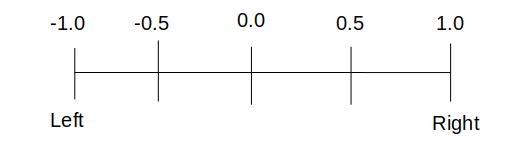
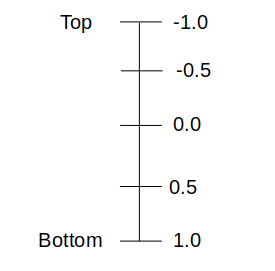

The Alignment class is used to specify the position of the child within the containing widget. The Alignment constructor takes two argument, the first argument specifies the horizontal position and second argument specifies the vertical position. Consider the following picture :
 Here are some example of different alignment values:
Alignment(0.0, 0.0) represents the center of the rectangle. The distance from -1.0 to 1.0 is the distance from one side of the rectangle to another side of the rectangle. Therefore 2.0 units horizontally (or Vertically) is equivalent to the width (or height) of the rectangle.Alignment(-1.0, -1.0) represents the top left of the rectangle.Alignment(1.0, 1.0) represents the bottom right of the rectagle.Alignment(0.0, 3.0) represents a point that is horizontally centered with respect to the rectanlge and vertically below the bottom of the rectangle by the height of the rectagle.Alignment(0.0, -0.5) represents a point that is horizontally centered and vertically halfway between the top edges and the center.Here is a common formula from which we can understand the alignment of its child. Alignment(x, y) in a rectangle with height h and width w describes the point:
(x*(w/2) + w/2, y*(h/2) + h/2)
in the coordinate system of the rectangle. So, if you want your child widget to be positioned centered here is an example for you:
alignment: Alignment(0.0, 0.0),
The Alignment class has also defined following constants you can use instead of the points.
bottomCenter : The center point along the bottom edge. Alignment(-1.0, 1.0)bottomLeft : The bottom left corner. Alignment(-1.0, 1.0)bottomRight : The bottom right corner. Alignment(1.0, 1.0)center : The center point, both horizontally and vertically. Alignment(0.0, 0.0)centerLeft : The center point along the left edge. Alignment(-1.0, 0.0)centerRight : The center point along the right edge. Alignment(1.0, 0.0)topCenter : The center point along the top edge. Alignment(0.0, -1.0)topLeft : The top left corner. Alignment(-1.0, -1.0)topRight : The top right corner. Alignment(1.0, -1.0)Align( alignment: Alignment.bottomRight, child:FlutterLogo, heightFactor: 0.5 )
This widget helps you to align its child within itself and optionally sizes itself based on the child's size.
For example, to align a box at the bottom right, you would pass this box a tight constraint that is bigger than the child's natural size, with an alignment of Alignment.bottomRight.
This widget will be as big as possible if its dimensions are constrained and widthFactor and heightFactor are null.
If a dimension is unconstrained and the corresponding size factor is null then the widget will match its child's size in that dimension.
If a size factor is non-null then the corresponding dimension of this widget will be the product of the child's dimension and the size factor. For example if widthFactor is 2.0 then the width of this widget will always be twice its child's width.
It has following arguments:
The alignment property describes a point in the child's coordinate system and a different point in the coordinate system of this widget. The Align widget positions the child such that both points are lined up on top of each other.
As given in the doc, “If non-null, sets its height to the child’s height multiplied by this factor”. This way the alignment can be given a consistency across the height. It takes in a double value and it can be used as given below.
Align( alignment: Alignment.bottomRight, child:FlutterLogo, heightFactor: 0.5 ),
Similar to how the heightFactor works, the widget can also be manipulated. Takes in a double value and can be used as below,
Align( alignment: Alignment.bottomRight, child:FlutterLogo, widthFactor: 0.5 )
A widget that centers its child within itself.
This widget is another form of Align widget with alignment is set to Alignment(0.0, 0.0). Just like Align widget you can also use widthFactor and heightFactor properties.
This widget will be as big as possible if its dimensions are constrained and widthFactor and heightFactor are null.
If a dimension is unconstrained and the corresponding size factor is null then the widget will match its child's size in that dimension.
If a size factor is non-null then the corresponding dimension of this widget will be the product of the child's dimension and the size factor. For example if widthFactor is 2.0 then the width of this widget will always be twice its child's width.